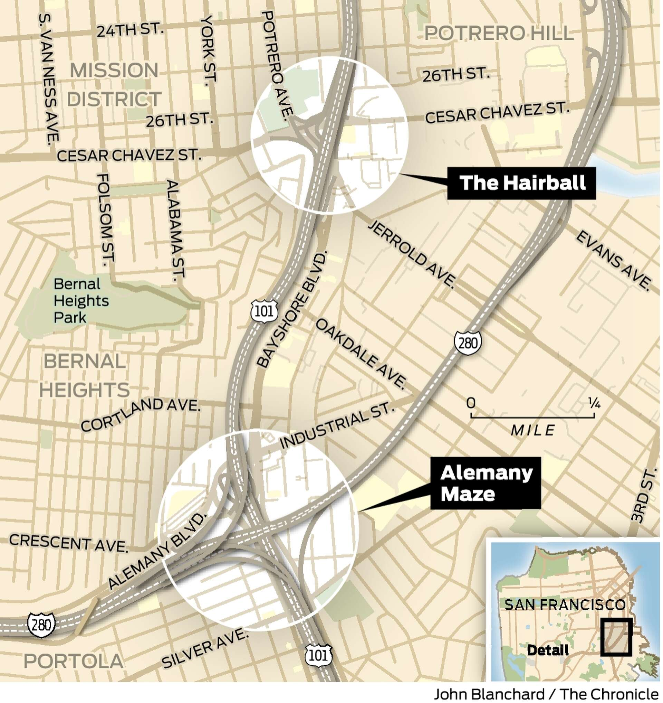

Fix the Hairball
The only pedestrian connection to Southeast San Francisco.

The hairball is the name of a dangerous intersection underneath the US-101 and Cesar Chavez streets, relied upon by walkers, bikers, and drivers alike.
This page is a grassroots petition to show community support for improving this intersection.
This is a recent video of the intersection at night, traveling Southbound, by bike.
Not sure why my GoPro says this was 2022... this was taken March 2025.
The Hairball's Location

No Alternative Intersections
List of issues
- No lighting: Area is pitch-black after sunset (430 pm in the winter)!
- Several curbs and sidewalks are too narrow, or too close to vehicles.
- Intersections with vehicles have major blind spots. Vehicles do not yield.
- There are persistent encampments with items across the sidewalk.
- Some pedestrian paths lead directly into vehicle traffic with no protection.
More Videos
Ways to improve the intersection:
- Add lighting (permanent or motion-sense) for usage at dark.
- Widen several curbs for accessbility and safety.
- Add mirrors to eliminate vehicle-to-pedestrian blind spots.
- Add fence between Potrero Northbound and Sidewalk.
- Consider adding traffic slowing measures.
Show your support!
If we can get 100s of signatures this fall, maybe we can convince the city to take action before Winter 2025.
Community Support
Supported by these local organizations! Contact borde.akash@gmail.com to be added to this list.